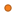
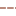
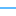

<!doctype html>
<html lang="en">
    <head>
        <meta charset="utf-8">
        <meta http-equiv="X-UA-Compatible" content="IE=edge">
        <meta name="viewport" content="initial-scale=1,user-scalable=no,maximum-scale=1,width=device-width">
        <meta name="mobile-web-app-capable" content="yes">
        <meta name="apple-mobile-web-app-capable" content="yes">
        <link rel="stylesheet" href="css/leaflet.css">
        <link rel="stylesheet" href="css/qgis2web.css"><link rel="stylesheet" href="css/fontawesome-all.min.css">
        <style>
        html, body, #map {
            width: 100%;
            height: 100%;
            padding: 0;
            margin: 0;
        }
        </style>
        <title></title>
    </head>
    <body>
        <div id="map">
        </div>
        <script src="js/qgis2web_expressions.js"></script>
        <script src="js/leaflet.js"></script>
        <script src="js/leaflet-svg-shape-markers.min.js"></script>
        <script src="js/leaflet.rotatedMarker.js"></script>
        <script src="js/leaflet.pattern.js"></script>
        <script src="js/leaflet-hash.js"></script>
        <script src="js/Autolinker.min.js"></script>
        <script src="js/rbush.min.js"></script>
        <script src="js/labelgun.min.js"></script>
        <script src="js/labels.js"></script>
        <script src="data/CameraTrapLocations_1.js"></script>
        <script src="data/NalediRoads_2.js"></script>
        <script src="data/NalediRivers_3.js"></script>
        <script src="data/NalediBoundary_4.js"></script>
        <script src="data/Speciesimages_5.js"></script>
        <script>
        var map = L.map('map', {
            zoomControl:true, maxZoom:28, minZoom:1
        }).fitBounds([[-22.08767160041961,29.041733428463694],[-22.080507900180937,29.05635782393185]]);
        var hash = new L.Hash(map);
        map.attributionControl.setPrefix('<a href="https://github.com/tomchadwin/qgis2web" target="_blank">qgis2web</a> &middot; <a href="https://leafletjs.com" title="A JS library for interactive maps">Leaflet</a> &middot; <a href="https://qgis.org">QGIS</a>');
        var autolinker = new Autolinker({truncate: {length: 30, location: 'smart'}});
        var bounds_group = new L.featureGroup([]);
        function setBounds() {
        }
        map.createPane('pane_OSMStandard_0');
        map.getPane('pane_OSMStandard_0').style.zIndex = 400;
        var layer_OSMStandard_0 = L.tileLayer('http://tile.openstreetmap.org/{z}/{x}/{y}.png', {
            pane: 'pane_OSMStandard_0',
            opacity: 1.0,
            attribution: '<a href="https://www.openstreetmap.org/copyright">© OpenStreetMap contributors, CC-BY-SA</a>',
            minZoom: 1,
            maxZoom: 28,
            minNativeZoom: 0,
            maxNativeZoom: 19
        });
        layer_OSMStandard_0;
        map.addLayer(layer_OSMStandard_0);
        function pop_CameraTrapLocations_1(feature, layer) {
            var popupContent = '<table>\
                    <tr>\
                        <td colspan="2">' + (feature.properties['id'] !== null ? autolinker.link(feature.properties['id'].toLocaleString()) : '') + '</td>\
                    </tr>\
                </table>';
            layer.bindPopup(popupContent, {maxHeight: 400});
        }

        function style_CameraTrapLocations_1_0() {
            return {
                pane: 'pane_CameraTrapLocations_1',
                shape: 'diamond',
                radius: 8.8,
                opacity: 1,
                color: 'rgba(61,128,53,1.0)',
                dashArray: '',
                lineCap: 'butt',
                lineJoin: 'miter',
                weight: 2.0,
                fill: true,
                fillOpacity: 1,
                fillColor: 'rgba(84,176,74,1.0)',
                interactive: true,
            }
        }
        map.createPane('pane_CameraTrapLocations_1');
        map.getPane('pane_CameraTrapLocations_1').style.zIndex = 401;
        map.getPane('pane_CameraTrapLocations_1').style['mix-blend-mode'] = 'normal';
        var layer_CameraTrapLocations_1 = new L.geoJson(json_CameraTrapLocations_1, {
            attribution: '',
            interactive: true,
            dataVar: 'json_CameraTrapLocations_1',
            layerName: 'layer_CameraTrapLocations_1',
            pane: 'pane_CameraTrapLocations_1',
            onEachFeature: pop_CameraTrapLocations_1,
            pointToLayer: function (feature, latlng) {
                var context = {
                    feature: feature,
                    variables: {}
                };
                return L.shapeMarker(latlng, style_CameraTrapLocations_1_0(feature));
            },
        });
        bounds_group.addLayer(layer_CameraTrapLocations_1);
        map.addLayer(layer_CameraTrapLocations_1);
        function pop_NalediRoads_2(feature, layer) {
            var popupContent = '<table>\
                    <tr>\
                        <td colspan="2">' + (feature.properties['id'] !== null ? autolinker.link(feature.properties['id'].toLocaleString()) : '') + '</td>\
                    </tr>\
                </table>';
            layer.bindPopup(popupContent, {maxHeight: 400});
        }

        function style_NalediRoads_2_0() {
            return {
                pane: 'pane_NalediRoads_2',
                opacity: 1,
                color: 'rgba(3,1,0,1.0)',
                dashArray: '',
                lineCap: 'square',
                lineJoin: 'bevel',
                weight: 2.0,
                fillOpacity: 0,
                interactive: true,
            }
        }
        map.createPane('pane_NalediRoads_2');
        map.getPane('pane_NalediRoads_2').style.zIndex = 402;
        map.getPane('pane_NalediRoads_2').style['mix-blend-mode'] = 'normal';
        var layer_NalediRoads_2 = new L.geoJson(json_NalediRoads_2, {
            attribution: '',
            interactive: true,
            dataVar: 'json_NalediRoads_2',
            layerName: 'layer_NalediRoads_2',
            pane: 'pane_NalediRoads_2',
            onEachFeature: pop_NalediRoads_2,
            style: style_NalediRoads_2_0,
        });
        bounds_group.addLayer(layer_NalediRoads_2);
        map.addLayer(layer_NalediRoads_2);
        function pop_NalediRivers_3(feature, layer) {
            var popupContent = '<table>\
                    <tr>\
                        <td colspan="2">' + (feature.properties['id'] !== null ? autolinker.link(feature.properties['id'].toLocaleString()) : '') + '</td>\
                    </tr>\
                </table>';
            layer.bindPopup(popupContent, {maxHeight: 400});
        }

        function style_NalediRivers_3_0() {
            return {
                pane: 'pane_NalediRivers_3',
                opacity: 1,
                color: 'rgba(7,152,255,1.0)',
                dashArray: '',
                lineCap: 'square',
                lineJoin: 'bevel',
                weight: 2.0,
                fillOpacity: 0,
                interactive: true,
            }
        }
        map.createPane('pane_NalediRivers_3');
        map.getPane('pane_NalediRivers_3').style.zIndex = 403;
        map.getPane('pane_NalediRivers_3').style['mix-blend-mode'] = 'normal';
        var layer_NalediRivers_3 = new L.geoJson(json_NalediRivers_3, {
            attribution: '',
            interactive: true,
            dataVar: 'json_NalediRivers_3',
            layerName: 'layer_NalediRivers_3',
            pane: 'pane_NalediRivers_3',
            onEachFeature: pop_NalediRivers_3,
            style: style_NalediRivers_3_0,
        });
        bounds_group.addLayer(layer_NalediRivers_3);
        map.addLayer(layer_NalediRivers_3);
        function pop_NalediBoundary_4(feature, layer) {
            var popupContent = '<table>\
                    <tr>\
                        <td colspan="2">' + (feature.properties['id'] !== null ? autolinker.link(feature.properties['id'].toLocaleString()) : '') + '</td>\
                    </tr>\
                </table>';
            layer.bindPopup(popupContent, {maxHeight: 400});
        }

        function style_NalediBoundary_4_0() {
            return {
                pane: 'pane_NalediBoundary_4',
                opacity: 1,
                color: 'rgba(152,79,58,1.0)',
                dashArray: '10,5',
                lineCap: 'square',
                lineJoin: 'bevel',
                weight: 2.0,
                fillOpacity: 0,
                interactive: true,
            }
        }
        map.createPane('pane_NalediBoundary_4');
        map.getPane('pane_NalediBoundary_4').style.zIndex = 404;
        map.getPane('pane_NalediBoundary_4').style['mix-blend-mode'] = 'normal';
        var layer_NalediBoundary_4 = new L.geoJson(json_NalediBoundary_4, {
            attribution: '',
            interactive: true,
            dataVar: 'json_NalediBoundary_4',
            layerName: 'layer_NalediBoundary_4',
            pane: 'pane_NalediBoundary_4',
            onEachFeature: pop_NalediBoundary_4,
            style: style_NalediBoundary_4_0,
        });
        bounds_group.addLayer(layer_NalediBoundary_4);
        map.addLayer(layer_NalediBoundary_4);
        function pop_Speciesimages_5(feature, layer) {
            var popupContent = '<table>\
                    <tr>\
                        <td colspan="2"></td>\
                    </tr>\
                    <tr>\
                        <td colspan="2">' + (feature.properties['Nameinweb'] !== null ? autolinker.link(feature.properties['Nameinweb'].toLocaleString()) : '') + '</td>\
                    </tr>\
                </table>';
            layer.bindPopup(popupContent, {maxHeight: 400});
        }

        function style_Speciesimages_5_0() {
            return {
                pane: 'pane_Speciesimages_5',
                radius: 4.399999999999997,
                opacity: 1,
                color: 'rgba(179,92,21,1.0)',
                dashArray: '',
                lineCap: 'butt',
                lineJoin: 'miter',
                weight: 2.0,
                fill: true,
                fillOpacity: 1,
                fillColor: 'rgba(247,128,30,1.0)',
                interactive: true,
            }
        }
        map.createPane('pane_Speciesimages_5');
        map.getPane('pane_Speciesimages_5').style.zIndex = 405;
        map.getPane('pane_Speciesimages_5').style['mix-blend-mode'] = 'normal';
        var layer_Speciesimages_5 = new L.geoJson(json_Speciesimages_5, {
            attribution: '',
            interactive: true,
            dataVar: 'json_Speciesimages_5',
            layerName: 'layer_Speciesimages_5',
            pane: 'pane_Speciesimages_5',
            onEachFeature: pop_Speciesimages_5,
            pointToLayer: function (feature, latlng) {
                var context = {
                    feature: feature,
                    variables: {}
                };
                return L.circleMarker(latlng, style_Speciesimages_5_0(feature));
            },
        });
        bounds_group.addLayer(layer_Speciesimages_5);
        map.addLayer(layer_Speciesimages_5);
        var baseMaps = {};
        L.control.layers(baseMaps,{' Species images': layer_Speciesimages_5,' Naledi Boundary': layer_NalediBoundary_4,' Naledi Rivers': layer_NalediRivers_3,' Naledi Roads': layer_NalediRoads_2,' Camera Trap Locations': layer_CameraTrapLocations_1,"OSM Standard": layer_OSMStandard_0,}).addTo(map);
        setBounds();
        </script>
    </body>
</html>
